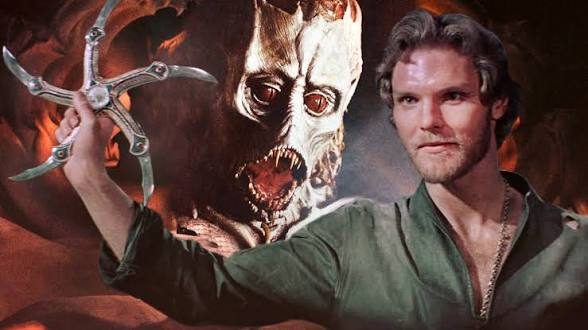

👑 🔮 KRULL (1983) — CERTIFIED MGC VF-22

🏛 MGC LOWER COURT OF APPEALS
- ASSET TITLE: Krull (1983) – The Five-Pointed Glaive Fantasy Strike
- BASELINE BENCH ASSESSMENT: Room Allocation ➔ MGC VF-22 (Low Very Fine / Heavy Circulated Fantasy Specimen)
- PRESIDING DOCKET: MGC Judge Bob & Chief Justice MGC
- CASE FILE: #060
📜 THE INITIAL INQUEST & FORENSIC LOG (4-FLAW DEFECT LOG)
Under a cold, disciplined 5x lens review, Krull carries unmistakable high-budget 1983 physical striking power—James Horner’s thunderous orchestral score, tactile Pinewood Studios sets, Fire Mares, and an early ensemble featuring Liam Neeson and Robbie Coltrane. However, four distinct structural defects weigh down the planchet and keep it pinned at VF-22:
🚨 Key Planchet Flaws:
1. The Mid-Act Quest Travelogue Drag
- After Prince Colwyn retrieves the Glaive early in the film, the narrative stalls into an extended series of episodic fetch-quest detours (the Emerald Seer, the Widow of the Web, the quicksand swamp). This mid-act wandering drains linear momentum before the band ever reaches the Black Fortress.
2. The Under-Utilized Signature Weapon Scuff
- Despite dominating the marketing poster and title mythology, the five-pointed Glaive sits holstered for nearly the entire runtime. Colwyn finally deploys it in the last ten minutes—only for it to get stuck inside the Beast’s chest, leaving the climax to be resolved by love-granted fire hands instead.
3. The Uncalibrated Tone & World-Building Friction
- Krull attempts to weld high-fantasy Arthurian sword-and-sorcery onto Star Wars-style laser-blasting alien Slayers without establishing hard internal logic rules, creating noticeable genre friction across the planchet.
4. The Flat Lead Chemistry Wear
- While the supporting band of outlaws brings welcome grit and humor, the central royal romance between Colwyn and Lyssa relies on stiff, theatrical dialogue delivery that lacks the emotional luster needed to anchor the third-act payoff.
⚖ THE APPELLATE REVIEW & SUSTAINED RULING
The Chief Justice stepped up to the high-bench console and audited all four defects under the 5x magnifying lens, holding the baseline allocation firm with zero upward adjustment:
Motion 1 (The Mid-Act Quest Travelogue Drag)
- SUSTAINED. The Court confirms that the episodic detours through the Emerald Seer, the Widow of the Web, and the quicksand swamp stall the linear narrative gravity before the band ever reaches the Black Fortress.
Motion 2 (The Under-Utilized Signature Weapon Scuff)
- SUSTAINED. Keeping the titular five-pointed Glaive holstered until the final ten minutes—only for it to lodge harmlessly in the Beast’s chest—leaves a permanent structural fingerprint on the payoff engine.
Motion 3 (The Uncalibrated Tone & World-Building Friction)
- SUSTAINED. Welding Arthurian sword-and-sorcery onto laser-blasting alien Slayers without hard internal logic rules creates undeniable genre friction across the planchet.
Motion 4 (The Flat Lead Chemistry Wear)
- SUSTAINED. While James Horner’s thunderous score and the rugged outlaw supporting cast keep Krull safely above the Fine (F-12 to F-19) tier, the stiff royal romance prevents any upward movement out of the low-20s.
🔍 THE FINAL DECREE & CERTIFIED JUDGMENT
- The Final Executive Verdict: With all four structural defects sustained on the permanent record, the Lower Court denies any appellate bump. While Krull retains undeniable 1980s Pinewood practical charm and musical striking power, heavy mid-act circulation wear keeps it locked right at its baseline allocation. The final, certified consensus score is permanently chiseled into the registry at MGC VF-22 (Low Very Fine Specimen).
- MGC Judge Bob slams his wooden gavel down with a thunderous pop. Case Closed! ⚖🔮

• © 2026 MOVIE GRADING CONSENSUS. All Sovereign Rights Reserved.